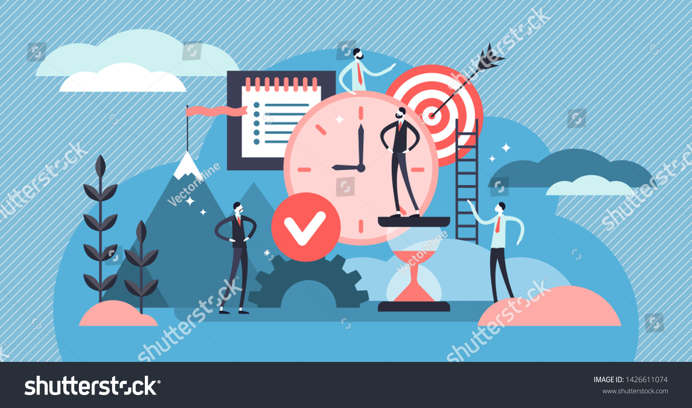

La Discipline

La discipline est l'ensemble des mesures qui visent à la fois à assurer la coexistence entre les membres de la communauté de travail et à atteindre l'objectif économique pour lequel cette communauté a été créée.
L'employeur est investi, au sein de son entreprise, d'un ensemble de pouvoirs et de facultés qui permettent de garantir la bonne exécution de la prestation de travail de chaque salarié. À ce titre, il doit veiller à assurer la discipline sur le lieu de travail.
La protection dont bénéficient les représentants du personnel contre le licenciement ne les soustrait pas au pouvoir disciplinaire de l'employeur. Pendant l'exécution de leur contrat de travail, ils restent entièrement soumis, en qualité de salariés, au pouvoir hiérarchique du chef d'entreprise et peuvent faire l'objet d'une sanction disciplinaire. Il en va différemment au sein du CSE et dans le cadre de l’exercice de leur mandat.
Il peut ainsi arriver que la faute survienne non plus dans le strict cadre de l'exécution du contrat de travail, mais dans le cadre de l'exercice des fonctions représentatives.
La jurisprudence opère alors la distinction suivante :
pas de sanction possible en cas de simple irrégularité commise dans le cadre de l'exercice normal des activités représentatives ou syndicales ;
possibilité de sanction disciplinaire en cas d'abus de prérogative de la part du représentant du personnel. L'employeur devra, dans ce cas, prouver non seulement la faute, mais également l'existence d'un abus suffisamment important pour justifier une sanction disciplinaire (par exemple : usage irrégulier des heures de délégation, dépassement du crédit d'heures, détournement de cotisations syndicales, violences lors des négociations avec la direction, lors de faits de grèves, etc.).
les differentes solutions de la discipline
Tous les objectifs requièrent de l’autodiscipline.
- Perdre du poids, créer un blog influent, écrire un livre, monter une entreprise, apprendre un instrument, parler couramment une langue… demandent des heures et des heures de travail. Et dans ce long processus d’accomplissement, il arrive parfois que l’on ne ressente pas l’envie de travailler.
Dans ces moments, l’autodiscipline joue alors un rôle crucial. C’est elle qui nous permet de continuer d’avancer même lorsque nous manquons de motivation.
- Quand on a eu une longue journée de travail et que l’on rentre chez nous fatigué, c’est l’autodiscipline qui nous pousse à travailler encore quelques heures sur notre side-business.
-Quand il est dimanche matin et qu’il pleut, c’est l’autodiscipline qui nous fait mettre nos chaussures de sport pour aller courir.
-Quand on met le réveil un peu plus tôt le matin pour écrire quelques pages de notre livre, c’est l’autodiscipline qui nous fait sortir de notre lit où on est si bien.
C’est elle qui nous aide à faire les bons choix, à écrire un article plutôt que de regarder Netflix, à manger un fruit plutôt qu’un donut, à réviser l’espagnol plutôt que de jouer à Candy Crush, à contacter des prospects plutôt que trainer sur Youtube…
Et à chaque fois que l’on fait le bon choix, on avance un pas de plus dans la bonne direction jusqu’à atteindre nos objectifs.
C’est probablement la qualité la plus importante à développer pour réussir.
Donc dans cet article, nous allons voir quelques conseils pour apprendre à s’autodiscipliner.